Introducción a la Radioterapia
Física de la Radioterapia. Máster de Física Biomédica
¿Qué es la Radioterapia?
- Técnica médica para el tratamiento del cáncer y otras patologías1 mediante radiación ionizante.
- Actualmente, más del 50% de los pacientes con cáncer reciben radioterapia, sola o combinada con cirugía o quimioterapia.
- La radioterapia sola contribuye aproximadamente al 30% de las curaciones del cáncer, frente al 60% de la cirugía y el 10% de la quimioterapia.
¿Qué es el cáncer?
- El cáncer es una enfermedad caracterizada por el crecimiento descontrolado de células anormales en el cuerpo.
- A diferencia de las células sanas, las células cancerosas pierden sus mecanismos de regulación del crecimiento, lo que les permite dividirse de manera indefinida.
- Este crecimiento descontrolado provoca la formación de tumores malignos, que pueden interferir con el funcionamiento normal de los órganos y sistemas del organismo.
Origen del cáncer
- El origen del cáncer suele estar asociado a alteraciones genéticas que afectan los mecanismos de división celular y la reparación del ADN.
- Estos cambios pueden producirse por factores externos (como el tabaco, la radiación o ciertos virus) o internos (errores en la replicación celular o mutaciones heredadas).
- En muchas ocasiones, un evento iniciador puede permanecer en estado de latencia durante muchos años antes de que el cáncer comienze su progresión y evolución.
Naturaleza y capacidad de extensión del cáncer
- El cáncer tiene la capacidad de invadir tejidos cercanos y diseminarse a otros órganos, proceso conocido como metástasis.
- Esta extensión se realiza a través del sistema linfático y el torrente sanguíneo, y es una de las características que diferencian los tumores malignos de los benignos, que permanecen localizados.
- La capacidad de invasión y de desarrollo de metástasis hace que el cáncer sea una enfermedad compleja de tratar y controlar.
- La enfermedad evoluciona siguiendo diferentes estadios de progresión, lo que permite realizar una clasificación o estadiaje útil para decidir la estrategia de tratamiento.
Estadiaje. Sistema TMN
T (Tumor): Tamaño y extensión del tumor primario
Se clafica de T0 a T4 donde T0 indica que no hay evidencia de tumor primario, T1 indica un tumor pequeño y localizado, y T4 un tumor de gran tamaño o que invade tejidos cercanos.
N (Nódulos linfáticos): Diseminación por ganglios linfñaticos
Se clasifica de N0 a N3, donde N0 significa que no hay compromiso de los ganglios linfáticos y N3 indica una alta diseminación en los ganglios regionales.
M (Metástasis): Presencia de metástasis a distancia
M0 significa que no hay metástasis a distancia y M1 indica que el cáncer se ha propagado a otros órganos del cuerpo.
Principios de la Radioterapia
- La radiación ionizante se emplea para destruir las células cancerosas.
- La capacidad de destrucción es superior sobre las células cancerosas que sobre las normales debido a su mayor radiosensibilidad.
- Mediante técnicas avanzadas se procura concentrar la radiación en el tumor, minimizando la dosis y el daño en los órganos sanos.
Ventajas e inconvenientes de la Radioterapia
Ventajas
- Menos invasiva que la cirugía.
- Más localizada que la quimioterapia.
Inconvenientes
- Requiere múltiples sesiones, algunos tratamientos se extienden más de un mes.
- No es adecuada para enfermedades sistémicas.
Clasificación de la Radioterapia según la intención
- Radical: el objetivo es eliminar por completo el cáncer y lograr la curación del paciente.
- Exclusiva: se administra como tratamiento principal y único sin acompañarse de cirugía o quimioterapia (túmores de próstata o de cabeza y cuello no operables).
- Adyuvante: Tras cirugía, elimina células tumorales residuales.
- Paliativa: Alivia síntomas sin intención de curar el cáncer (ej.: dolor, sangrado).
Tratamientos adyuvantes
Dependiendo de la secuencia temporal se pueden distinguir también tratamientos neoadyuvantes: anteceden a la cirugía para facilitarla, y coadyuvantes: varias modalidades de tratamiento coinciden en el tiempo para aumentar su eficacia.
| Tipo | Definición |
|---|---|
| Teleterapia | La fuente de radiación se sitúa fuera del paciente a una cierta distancia. Se emplean fuentes radiactivas encapsuladas de alta actividad o generadores artificiales. |
| Braquiterapia | La fuente de radiación se coloca en el interior del paciente (intersticial, endocavitaria o luminal) o en contacto con su superficie (plexoterapia). Emplea fuentes radiactivas encapsuladas o generadores artificiales. En general asociada a algún tipo de procedimiento quirúrgico. |
| Metabólica | La fuente de radiación es distribuida por el paciente, aprovechando la cinética de un fármaco. Emplea fuentes radiactivas abiertas, normalmente mediante el marcaje de un radiofármaco. |
Equipos para Teleterapia
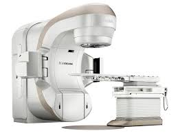
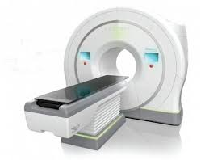
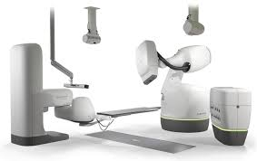
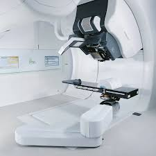
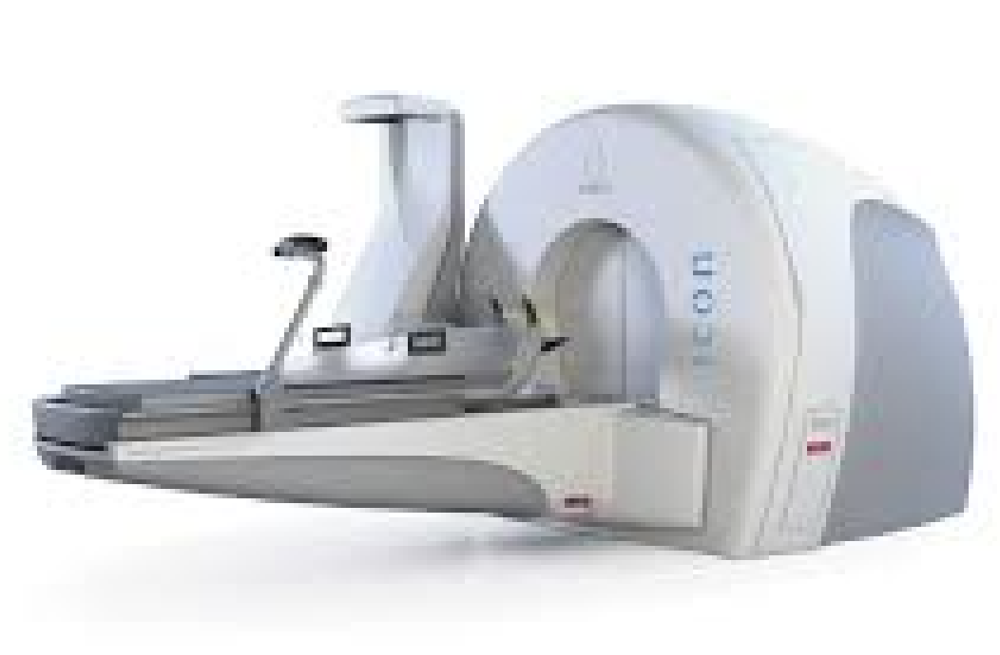
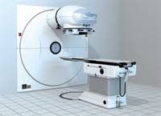
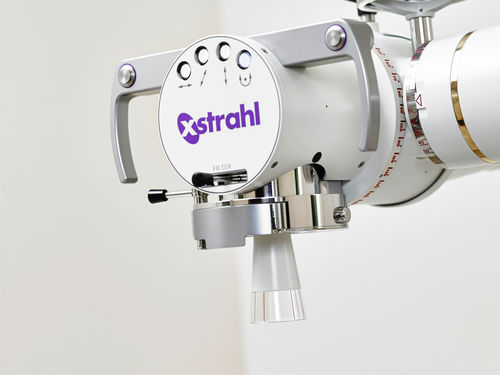
Características Generales de la Teleterapia
- Utilizada en más del 80% de los tratamientos.
- Aplicable a tumores sólidos.
- Dosis limitada por efectos secundarios en órganos sanos.
- Tratamiento ambulatorio en múltiples sesiones.
Técnicas de braquiterapia
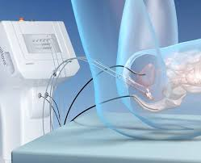
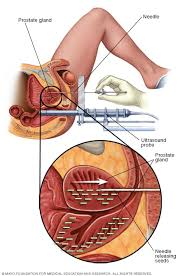
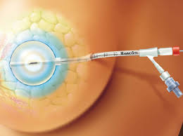
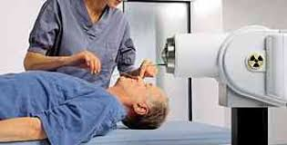
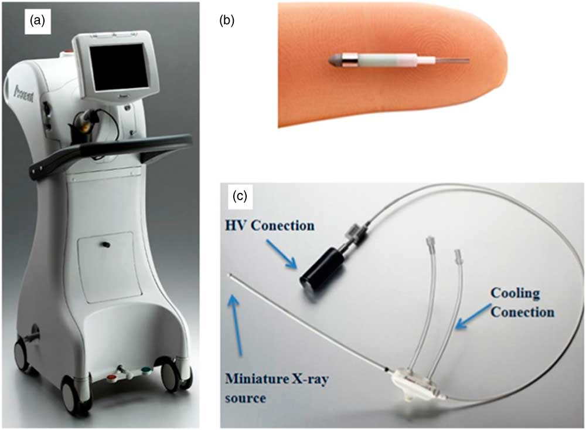
Precisión en la Dosis
- La precisión de la dosis es fundamental; desviaciones superiores al 6% afectan el resultado del tratamiento.
- Lograr precisiones menores al 5% requiere un esfuerzo considerable.
Tipos de Radiación en Teleterapia
- Fotones: Potenciales de aceleración de hasta 25 MV producidos en aceleradores lineales. En la actualidad lo más frecuente es utilizar potenciales de 6 MV. Los fotones se emplean para la irradiación de órganos internos. Alta robustez1.
- Electrones: Energías de entre 3 y 18 MeV generadas en aceleradores lineales. Se utilizan para irradiaciones superficiales. Alcance definido pero inadecuados para irradiaciones profundas por su alta sensibilidad a las variaciones de densidad.
- Protones e Iones Cargados: Energías entre 70 y 230 MeV generadas mediante ciclotrones, sincrociclotrones o sincrotrones. Control sobre el alcance de la radiación pero requieren un tratamiento particular sobre la robustez del tratamiento.
Conformación de la Dosis
- Grado de coincidencia entre el volumen de la dosis administrada y el volumen de tratamiento definido por el oncólogo.
- El objetivo es concentrar las dosis altas en los tejidos cancerígenos y minimizar la dosis en los tejidos sanos.
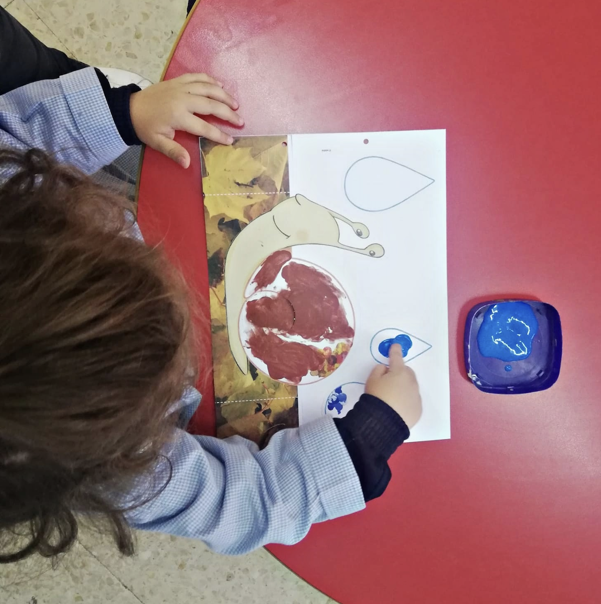
Ejemplo: Tratamiento de Próstata
- Se prescriben diferentes niveles de dosis:
- La próstata recibe una dosis.
- Las vesículas seminales reciben otra dosis.
- No es posible administrar cero dosis a los tejidos sanos circundantes porque los haces tienen que atravesarlos.
- La dosis tiene que ser razonablemente baja en el recto.
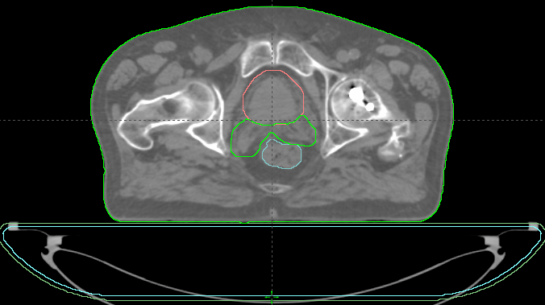
Próstata, 1 haz de protones
Próstata, 1 haz de protones
Próstata, 1 haz de protones
Comparación entre Fotones y Protones
- Protones:
- Depósito de dosis principalmente en un punto elegido.
- Se emplean múltiples haces para optimizar la dosis.
- Fotones:
- El máximo de dosis se produce en la entrada del haz y la dosis depositada disminuye progresivamente.
Próstata, 1 haz de fotones
Próstata, 1 haz de fotones
Próstata, 4 haces de fotones
Próstata, 4 haces de fotones
Próstata, técnica rotatoria de fotones
Próstata, técnica rotatoria de fotones
Radioterapia Convencional vs Avanzada
- En radioterapia convencional con fotones:
- Se combinan haces desde diferentes ángulos para concentrar la dosis en el punto de tratamiento.
- En técnicas avanzadas de radioterapia con fotones:
- Se emplean haces de formas complejas, asistidos por ordenador, para adaptar la dosis al volumen del tratamiento.
Próstata, VMAT
Próstata, VMAT
Capacidades del MLC
Próstata mediante VMAT. Distribución volumétrica de la dosis
Tratamiento de Mama
- El volumen de tratamiento no está rodeado completamente por otros tejidos.
- Hay una dirección preferente de irradiación
- Conformar implica reducir las dosis en el pulmón y el corazón.
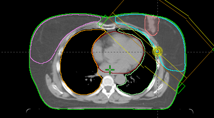
Mama, tratamiento con protones
Mama, tratamiento convencional con fotones
Mama, tratamiento convencional con fotones
Técnica Híbrida en Tratamiento de Mama
- En el Hospital de Fuenlabrada, se utiliza una técnica híbrida:
- Se combinan haces convencionales tangenciales con un arco volumétrico para obtener una dosis homogénea.
- Esto permite reducir la dosis en los pulmones y el corazón.
Mama, tratamiento con fotones técnica híbrida (RT convencional + VMAT)
Técnica de Inspiración Profunda (DIBH)
- Para reducir la dosis en el corazón, se emplea la técnica de Inspiración Profunda Mantenida (DIBH):
- La paciente se trata mientras mantiene una respiración profunda, alejando el corazón de la pared costal.
- El acelerador irradia solo cuando la paciente está en la posición correcta de respiración.
Mama en inspiración profunda mantenida, tratamiento con fotones técnica híbrida (RT convencional + VMAT + DIBH)
Reflectores de infrarojos para monitorizar la respìración
Curvas de respiración
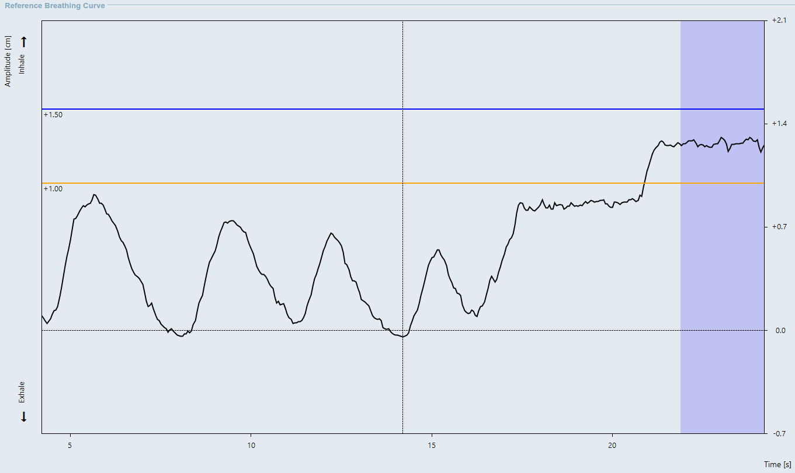
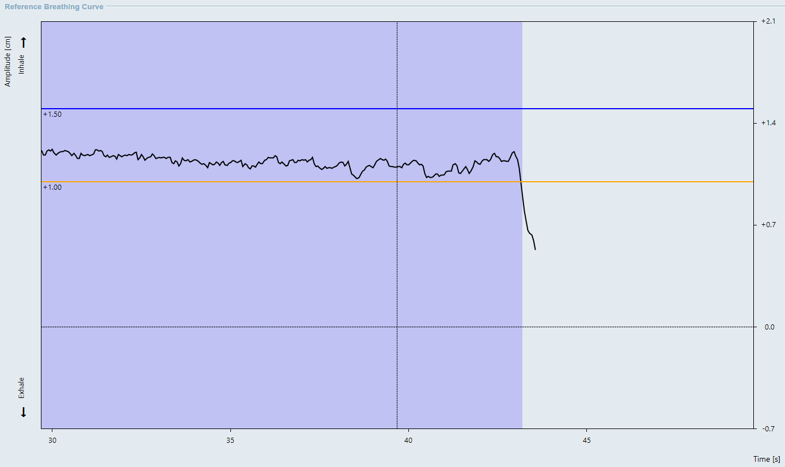
Evolución de la Radioterapia
- 1895-1920: Descubrimiento de rayos X y radioactividad; primeras curaciones.
- 1950s-1980s: Aparición de la teleterapia con \({}^{60}\)Co, aceleradores, radiocirugía.
- 1990s-Presente: Radioterapia conformada, modulación de intensidad, gestión del movimiento, radioterapia adaptativa.
Trabajo de los Radiofísicos en Radioterapia
- Control de equipos: Supervisión de equipos de radiación y auxiliares.
- Diseño de planes de tratamiento: Planificación y cálculo de dosis personalizadas.

Introducción a la Radioterapia. Física de la Radioterapia